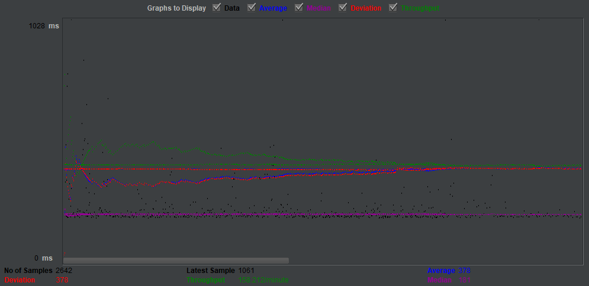
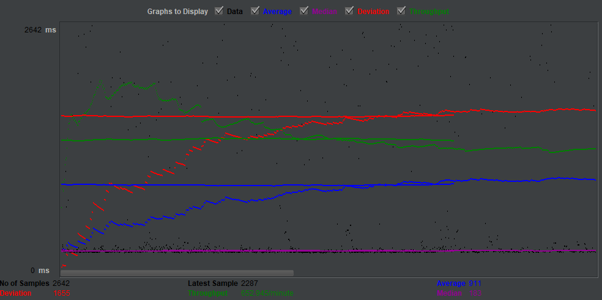
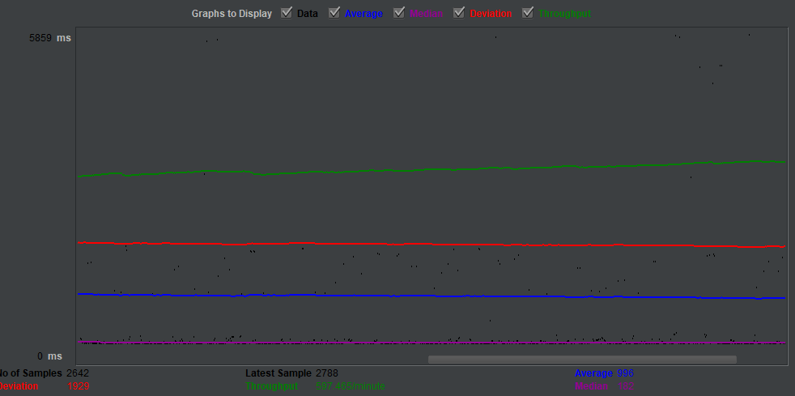

| Scaled version cases |
Graph Results Screenshot |
Average Query Time(ms) |
Average Search Servlet Time(ms) |
Average JDBC Time(ms) |
Analysis |
| Case 1: HTTP/1 thread |
 |
378 ms |
176.9205280662377 ms |
176.60443848713098 ms |
definitely ran better than the single instance version |
| Case 2: HTTP/10 threads |
 |
911 ms |
712.4952850749432 ms |
711.4746476767601 ms |
we expected this test to run verry fast because of the stablization and master slave relationship allowing for faster processing of multiple threads. This case ran better than the scaled version with only one thread, leading us to conclude that having more threads on the scaled version allows it to go through all the tasked work faster. |
| Case 3: HTTP/10 threads/No prepared statements |
 |
7452 ms |
7169.114223885314 ms |
7167.842918642695 ms |
we expected this test to still be relativly fast, with higher TS, TJ, and average speeds than case 4 below, because we thought tgat prepared statements contributed less to the speed, as they did with the no prepared statement on the single instance |
| Case 4: HTTP/10 threads/No connection pooling |
 |
996 ms |
803.8916998796367 ms |
803.5942308402725 ms |
we initally expected this test to go slower without connection pooling and for TS,TJ, and the average to be lower, because connection pooling should remove the time spent making connections. looking at the graph it seems everything in this test stayed relativly stable, with the lines being mostly straight. This case ran relativly fast, about the same as scaled version case two, and better than the other two cases for scaled version, further supporting the idea drawn form our results that having prepared statements and multiple threads on the scaled version allows the site to get more work done and deal with a heavier load, and our implies that having a connection pool important to the overall improvement of the program. possible errors are the same as listed in the first case |